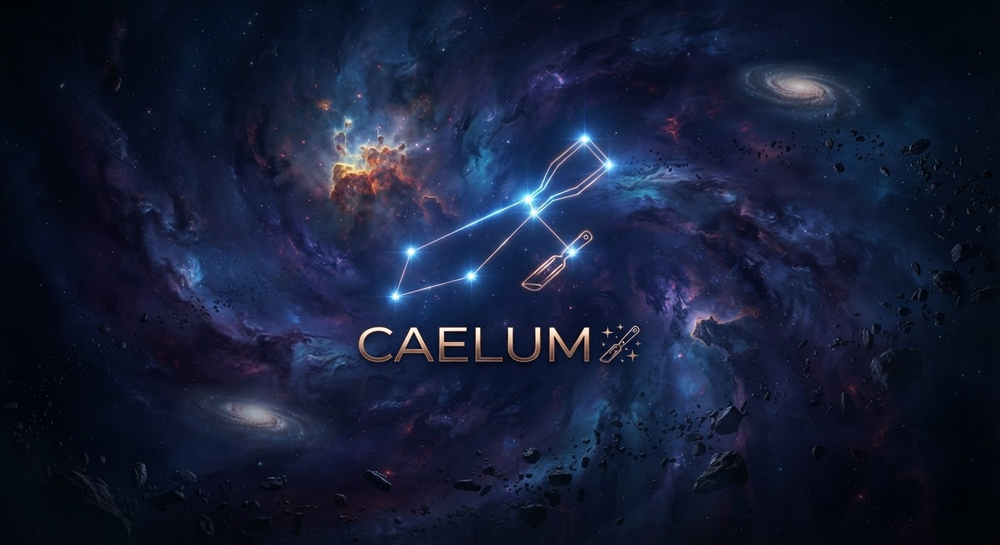

Calem Overview
The word Caelum (sometimes spelled as Calemum) has the following meanings and concepts depending on the context: In Astronomy: Caelum (known in Persian as the "Chisel") is the name of one of the 88 modern constellations in the southern sky. It has a small area and was named by the French astronomer Nicolas-Louis de Lacaille in the 18th century. In Latin: The Latin word caelum has roots that include meanings such as "sky," "the space overhead," or "heaven." For this reason, many space-related projects, companies, or artworks choose this name. In Projects and Brands: Given that you have previously used this name for galactic and space images, "CAELUM" serves as a unique, modern, and cosmic name that evokes the essence of science, space, and the galaxy.

Let's see the tasks